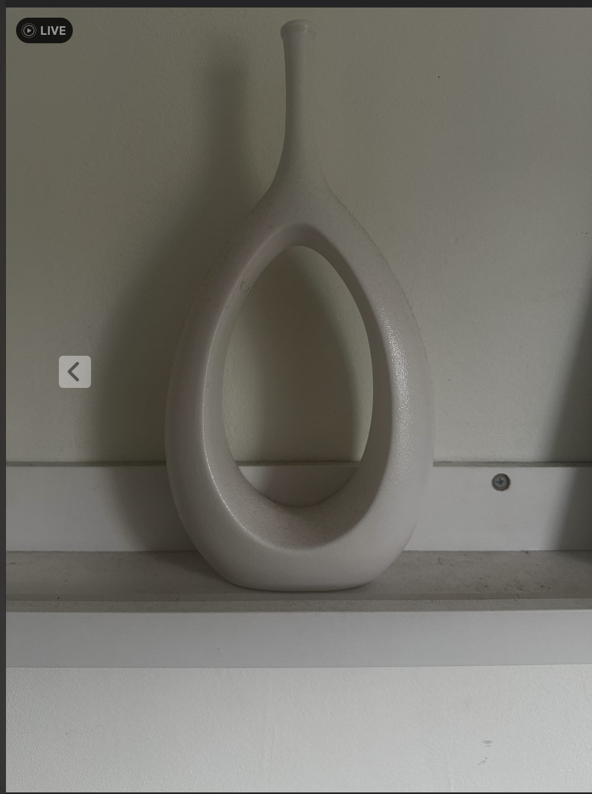
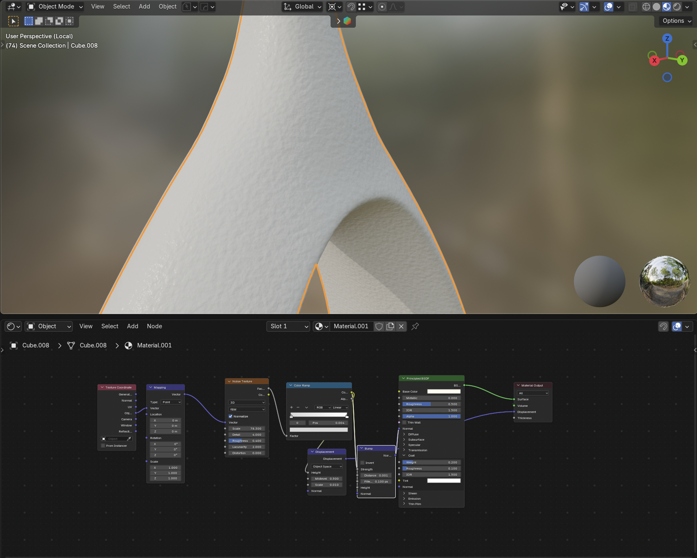

The modeling was complete, but now I needed to represent the bumpy and glossy material on the vase (figure 1). Blender uses a node based system that allowed me to recreate that material procedurally (figure 10). I could make precise changes and compare the vase model with my reference image easily. Node trees can be inredibly complex and long, but given my time constraint and my expertise, I could create a custom material that inherited the most important qualities of the original.


Finally, I could begin the last step: